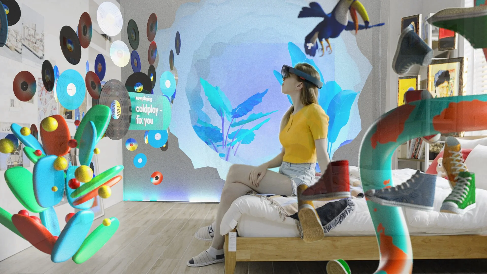
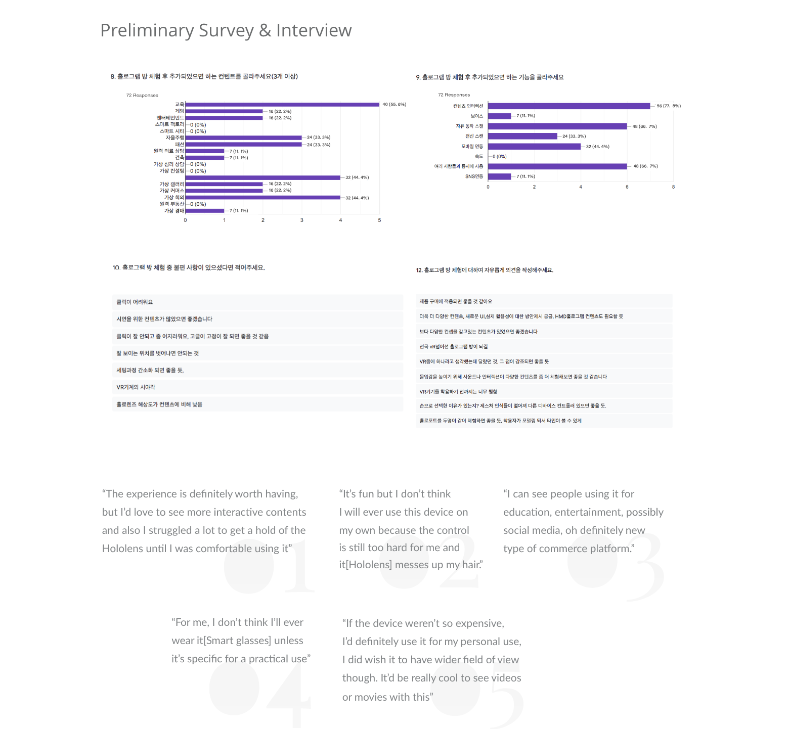
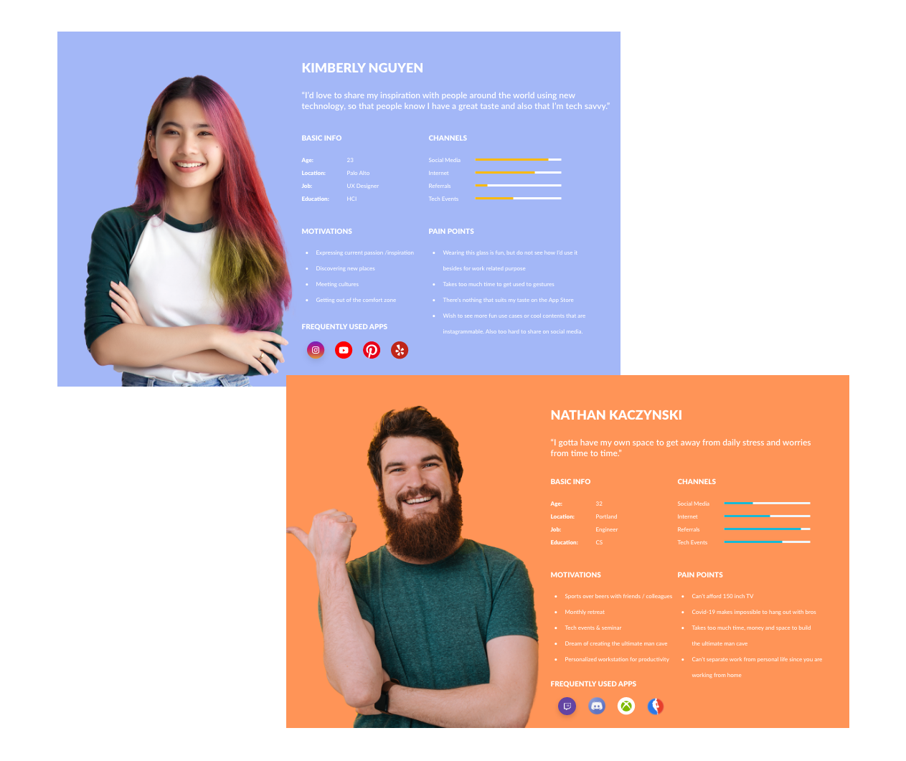
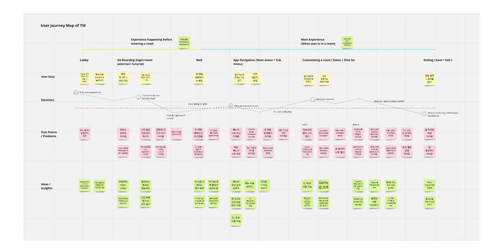
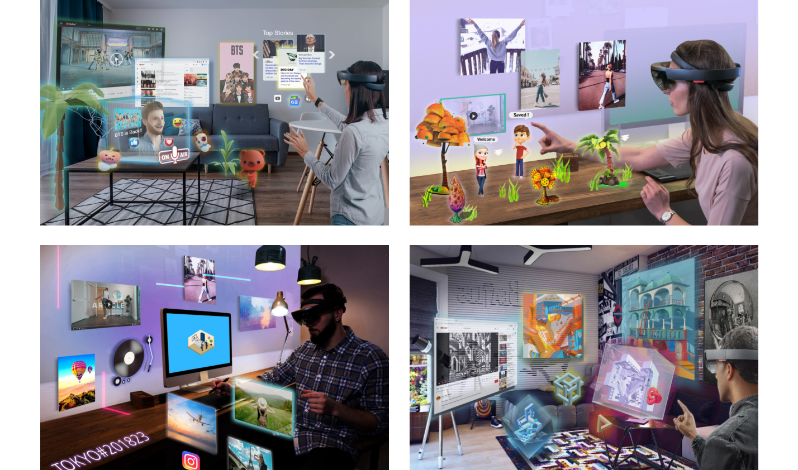
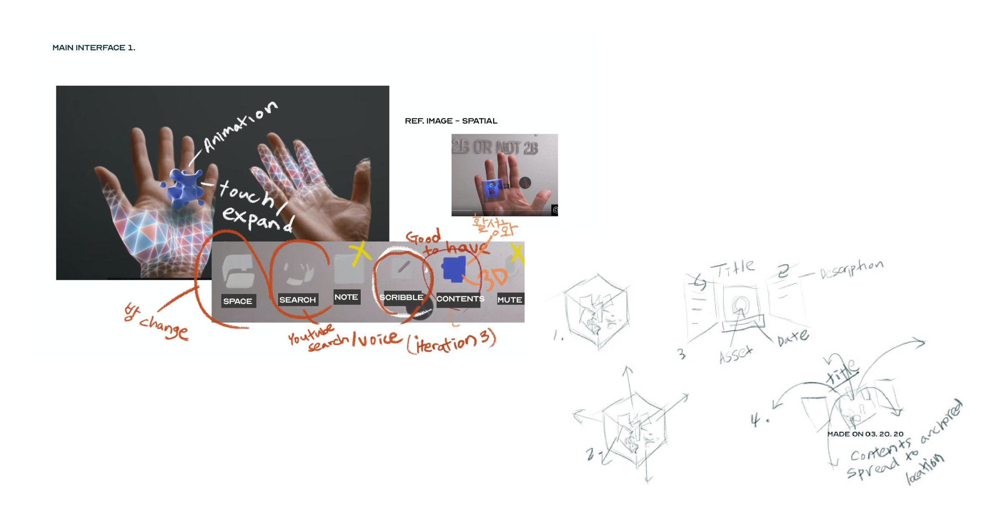
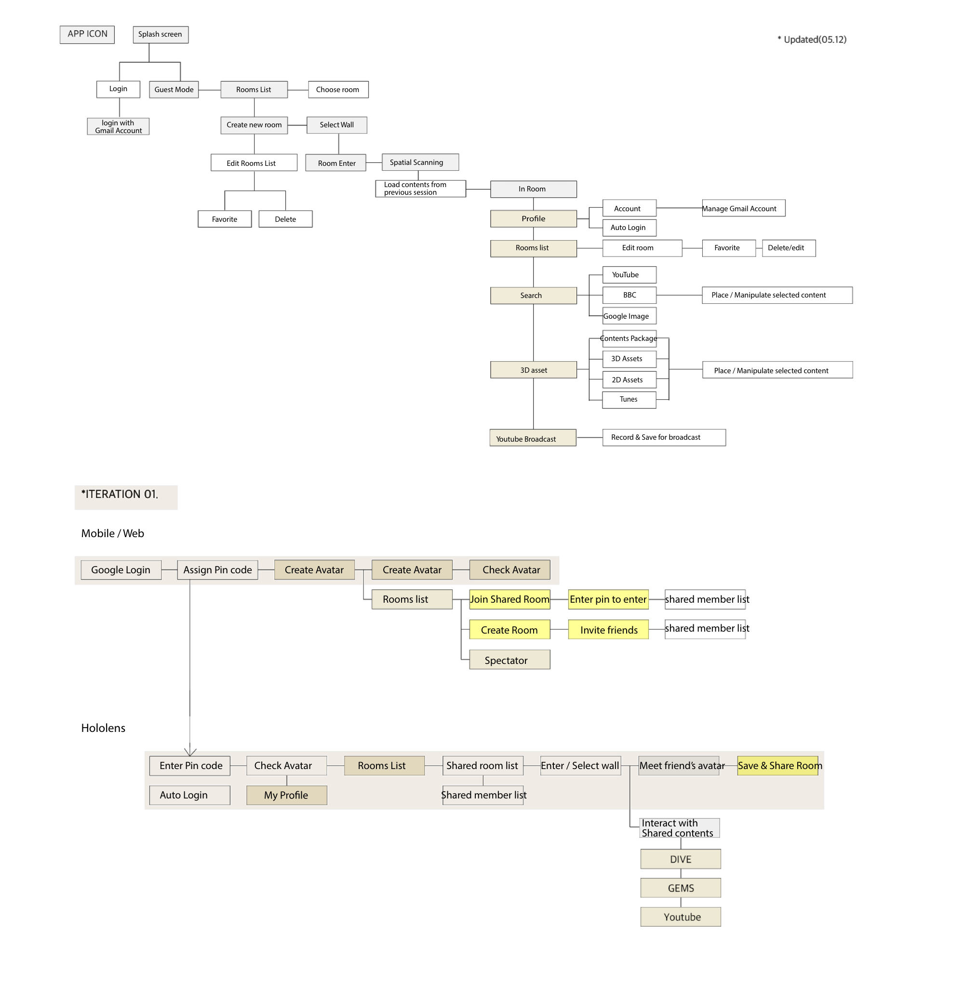
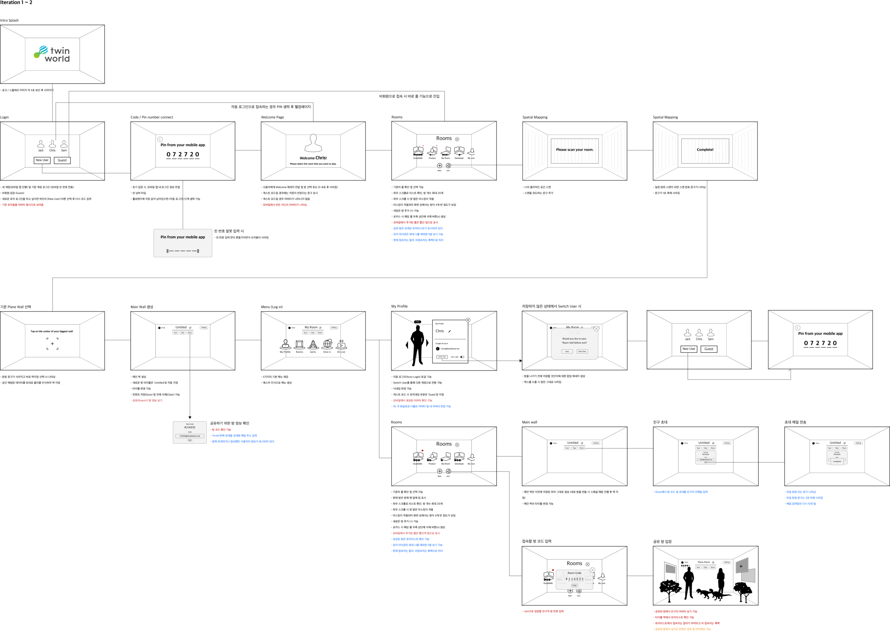
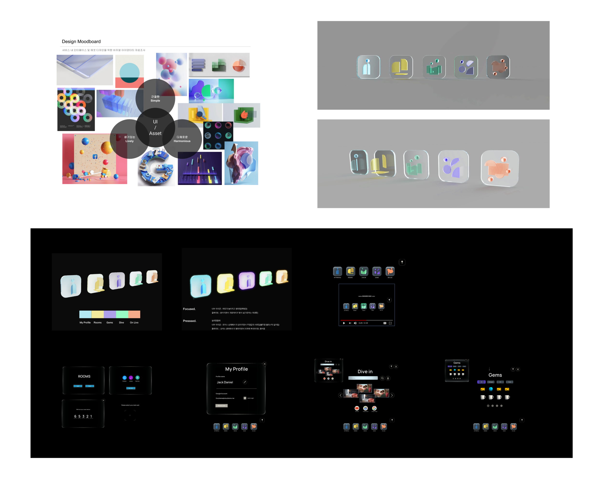
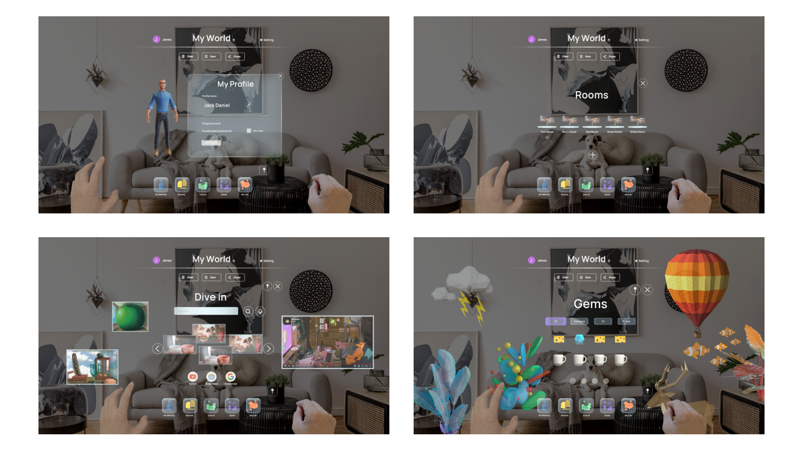

Project 05 · Mixed Reality Social Space
A social metaverse application for HoloLens 2 that lets users personalize their physical space with virtual assets.

Many users remain unfamiliar with actual XR experiences, particularly with wearable devices and smart glasses. First-time users frequently abandon the technology after struggling with gestural interactions like air-pointing at virtual interfaces. Those frustrating first attempts create lasting negative perceptions of XR as incomplete technology.
The challenge: ease the biggest frustration of first-time users, learning and adapting to the device's gestural grammar.
Preliminary surveys, user interviews, and persona development to map where first-time XR users actually struggle.



From the early concept sketch to information architecture, ideation sketches, and a final wireframe — establishing the gestural grammar before any device-side prototyping.




Built in MRTK (Mixed Reality Toolkit) and tested with real HoloLens 2 hardware. Every gesture and interaction was validated on-device, not just in mock environments.


Captured on HoloLens 2 — virtual asset placement and gestural interaction.
Captured on HoloLens 2 — personalized social space sharing.
Delivered a functional HoloLens 2 prototype that demonstrated accessible XR interaction and gathered user response data that helped DoubleMe identify its primary market target in an uncertain spatial computing landscape.